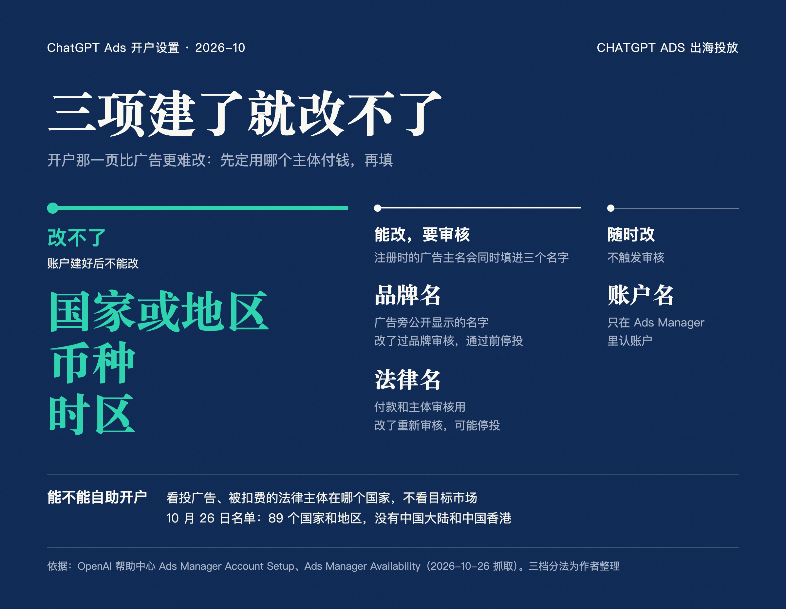

三句话版
ChatGPT Ads 里最难改的不是广告，是开户那一页。国家或地区、币种、时区，建好就定死；填之前先想清楚用哪个主体付钱。
10 月 21 日，OpenAI 宣布 ChatGPT Ads 再开 26 个国家，总数到 89 个，投过广告的广告主已超过 10 万。新开户的人会变多，填错的人也会变多。这篇写给还没开户的跨境卖家，只用 10 月 26 日抓取的帮助中心原文，不用自有投放数字。
帮助中心原话："These three settings cannot be changed after account creation." 三项指国家或地区、币种和时区。注册时填的广告主名会同时成为三个名字，建好后可以分开改，代价不一样。

1. 先定付款主体，再开户。 可用性页原话："the legal entity that will advertise and be billed must be based in a country listed as available below." 看的是主体所在国，不是目标市场；10 月 26 日的名单上没有中国大陆和中国香港。主体定了，国家或地区就按它填。名单外的可以先注册，开通后官方会通知。
2. 时区按管预算的人定。 预算页说，日预算按账户时区的周日到周六一周取平均。时区定死，预算周的边界也定死了。
3. 品牌名一次填对。 它是用户在 ChatGPT 里看到的名字。建完先核对三个名字，第一条广告投出前改完，免得投放中途因改名停下。
准备开户的： 定下用哪个法律主体投广告、付钱，查它在不在名单上；品牌名填想在广告里显示的名字，法律名填公司注册名。绑卡时可能先看到一笔临时预授权冻结，用来验证卡片。账单页说，金额因国家而异，按账户保存的币种发起，银行可能按卡的币种显示；它不是广告扣费，验证后自动释放，但视银行可能挂 8 天或更久。
已开户的： 去 Settings → General 核对三个名字；要改品牌名，挑停几天也不要紧的时候。
观望的： 现在不用动，开户那天先查名单。
做多个品牌的： 每个广告主单独一个账户；一个登录名下满 10 个账户（含被邀请的）就不能再自己新建。
把三项设置和三个名字写在一张纸上，和管付款的同事对一遍，再点注册。
留个问题：你打算用哪个国家的主体开户，它在名单上吗？评论区报一下品类和主体所在国，我整理常见卡点。
不能。帮助中心写明，国家或地区、币种和时区这三项在账户建好后不能改。
账户名只在 Ads Manager 里用来识别账户；品牌名是广告旁边公开显示的名字；法律名是公司注册名，用于付款和主体审核。注册时填的广告主名会同时填进三项，建好后可以在 Settings → General 分开改。
会。改品牌名会触发品牌审核，新名字通过前广告暂停。改法律名会重新做主体审核，也可能停投。改账户名不触发审核。
截至 2026 年 10 月 26 日不能。自助开户要求投广告、被扣费的法律主体位于可用名单上的国家或地区，当天名单有 89 个，不含中国大陆和中国香港。不在名单上的可以先注册，开通后官方会通知。
所属账户满 10 个（包括自己建的和被邀请加入的）后，就不能再自己新建，但还能被邀请加入别的账户。官方要求每个广告主单独一个账户。
Stan Lu · ChatGPT Ads 出海投放。写 ChatGPT 广告官方更新的中文解读，只用官方原文、报道、推断三栏出处。
栏目：ChatGPT Ads 更新解读 · 上一篇：商品 feed 活动：上传前的五道检查 · English
发布 2026-11-12 · 最后更新：2026-11-12